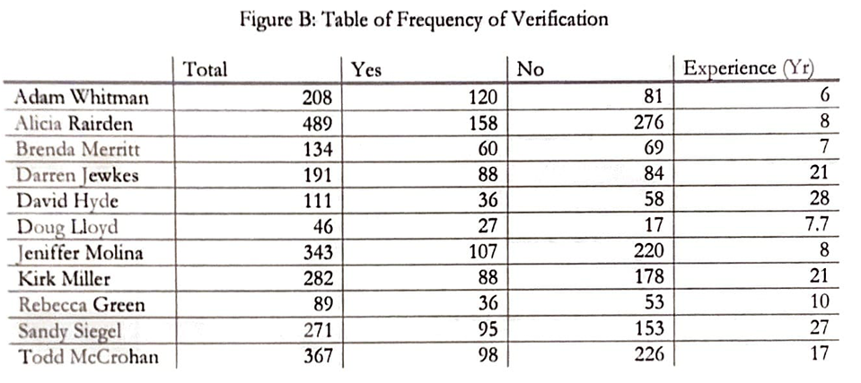

Analysis, Comparison, Evaluation, and Verification
Statistical analysis on methods regarding ACE-V process.
Summary
The objective of this analysis was to determine any pattern or irregularities outside of normal assumptions in the dataset regarding the evaluation of latent prints by experts. The dataset contained more than 2,500 individual cases with 76 variables that, while not completely independent, is isolated. Latent prints and professional analysis of prints hold high value in courts, and no error should be permitted. Type I errors regarding innocence as null should be as low as possible, and this suggests that any minor improvements on the methodology of latent print analysis are critical. Simple descriptive statistical measures were used, and it was found that there is a statistically significant advantage to the ACE-V system having a verifying examiner.
Introduction
Latent prints -friction ridge patterns from fingers, palms, joints, or other areas of the body that is left at crime scenes and later photographed or lifted- are key elements of an investigation. These pieces of evidence are examined by following a common methodology of "ACE-V", or Analysis, Comparison, Evaluation, and Verification. Latent examiners evaluate the latent prints into three categories. First, individualization where the latent and candidate (suspect) prints are deemed to come from the same source. Second, exclusion, where the pair is deemed to be from two different sources. Finally, inconclusive, where neither decision can be made.
Though evaluation of latent prints is considered critical evidence, concerns regarding subjectivity in professional analyst's decisions have arisen. Possible factors including leveling of expertise, post-exposure bias, pressure related to the degree of crime, and/or workload possibly introducing inconsistencies.
Client Sharon Kelley (henceforth "Client") has stressed a need for systemic analysis on growing concerns related to the methodology of evaluating latent prints. The Client has provided a dataset that concerns 76 variables and more than 2,500 individual examinations. The Client is also interested in the general observation of the data, without exact concerns or queries. Thus, the primary objective of the study is to observe and possibly spot any significant pattern, or lack thereof.
Approaches and Results
Initial analysis revealed that a significant portion of cases was not verified, with only approximately 44.0457 percent of cases having a verifying examiner. However, the general lack of prints of value -typically none or one, with a maximum of five- for the cases without verifying examiner in comparison to the number prints of value for cases with verifying examiner suggests a strong methodological bias.
Also, while complex cases involving conflict resolution at the third level of verification exist, no meaning statistical analysis can exist due to sheer infrequencies of the incident. Only 8 cases, or 0.7162 percent, among all cases with verifying examiners required conflict resolution.
Above, Figure A: Frequency of Verifying Examiner, shows the visual summation of each examiner's verification of other examiner's work. While the frequency of involvement in verification among different examiners exists, there is no discernable pattern to be interpreted through the given data.
Figure B: Table of Frequency of Verification of Figure C seems to carry the observation from Figure A. Not only is there a lack of discernable pattern in the evaluation between two examiners, but the rate of verification also seems to only depend on the individual regardless of experience - perhaps due to variability in cases.
Examination of the number of prints collected per type of crime (Using "Offense7", where crime is sorted into top 7 frequent categories), reveals a weak discernment. The boxplot of the number of prints for each type of major offense suggests that while Thefts carry a higher number of latent prints in general, the use of a log of the number of prints supports the need for additional statistical evidence that is not present.

Figure F displays a graph of which decision is held after verification, with A through F being the verifier's conclusion and G through L being the analyst's conclusion. Visually, the two distributions appear to have a drastically different conclusion. A simple t-test supports this visual analysis, with a p-value of 0.000871, well below the pre-specified alpha value of 0.005, rejecting the null hypothesis that there is no difference between the verifier's conclusion and the analyst's conclusion. However, the fact that two events are not independent should be accounted for.
The frequency of prints, for example with Figure G: CrimeType = 1 case table below, suggests a possible Poisson distribution. However, even if such a pattern did prevail, it would serve little purpose in supporting the accuracy of the conclusion by examiners.
Conclusion
In an attempt to follow the client's best interests, multiple leads were pursued with no remarkable discovery. ACE-V, before all, is a process utilized in comparison of possibly different items and the checkup of such process. It is a process that guarantees the precision of application, not necessarily the accuracy of the conclusion -which requires more sizeable data with greater independence and randomization. The study suggests that there is a benefit in utilizing the ACE-V system, most notably in reducing false-positive errors.
For a more detailed and effective analysis, we sincerely recommend cooperation with an individual or a group with statistical expertise from the early stages of data collection with a clear direction in mind.